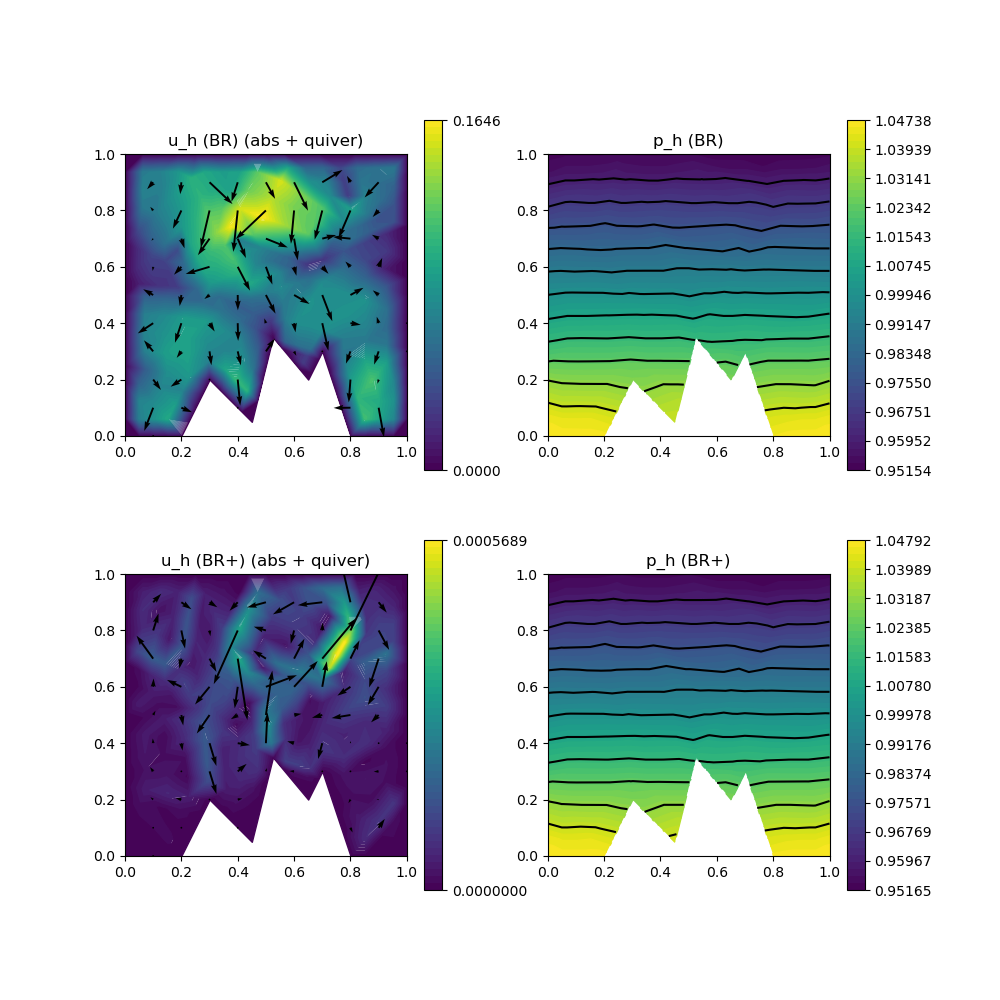

225 : Compressible Stokes 2D
This example solves the compressible Stokes equations where one seeks a (vector-valued) velocity $\mathbf{u}$, a density $\varrho$ and a pressure $p$ such that
\[\begin{aligned} - \mu \Delta \mathbf{u} + \lambda \nabla(\mathrm{div}(\mathbf{u})) + \nabla p & = \mathbf{f} + \varrho \mathbf{g}\\ \mathrm{div}(\varrho \mathbf{u}) & = 0\\ p & = eos(\varrho)\\ \int_\Omega \varrho \, dx & = M\\ \varrho & \geq 0. \end{aligned}\]
Here eos $eos$ is some equation of state function that describes the dependence of the pressure on the density (and further physical quantities like temperature in a more general setting). Moreover, $\mu$ and $\lambda$ are Lame parameters and $\mathbf{f}$ and $\mathbf{g}$ are given right-hand side data.
In this example we solve a analytical toy problem with the prescribed solution
\[\begin{aligned} \mathbf{u}(\mathbf{x}) & =0\\ \varrho(\mathbf{x}) & = 1 - (x_2 - 0.5)/c\\ p &= eos(\varrho) := c \varrho^\gamma \end{aligned}\]
such that $\mathbf{f} = 0$ and $\mathbf{g}$ nonzero to match the prescribed solution. This example is designed to study the well-balanced property of a discretisation. Note that a gradient-robust discretisation (set reconstruct = true below) has a much smaller L2 velocity error (i.e. approximatse the well-balanced state much better). For larger c the problem gets more incompressible which reduces the error further as then the right-hand side is a perfect gradient also when evaluated with the (now closer to a constant) discrete density. See reference below for more details.
"A gradient-robust well-balanced scheme for the compressible isothermal Stokes problem",
M. Akbas, T. Gallouet, A. Gassmann, A. Linke and C. Merdon,
Computer Methods in Applied Mechanics and Engineering 367 (2020),
>Journal-Link< >Preprint-Link<
module Example225_CompressibleStokes2D
using GradientRobustMultiPhysics
using ExtendableGrids
using GridVisualize
# the equation of state
function equation_of_state!(c,γ)
function closure(pressure,density)
for j = 1 : length(density)
pressure[j] = c*density[j]^γ
end
end
end
# the exact density (used for initial value of density if configured so)
function ϱ_exact!(M,c)
function closure(result,x)
result[1] = M*(1.0 - (x[2] - 0.5)/c)
end
end
# gravity right-hand side (just gravity but with opposite sign!)
function gravity!(γ,c)
function closure(result,x)
result[2] = - (1.0 - (x[2] - 0.5)/c)^(γ-2) * γ # = - ϱ^(γ-2) * γ
end
end
# gravity right-hand side (just gravity but with opposite sign!)
function rhs!(γ,c)
function closure(result,x)
result[2] = - (1.0 - (x[2] - 0.5)/c)^(γ-1) * γ # = - ϱ^(γ-2) * γ
end
end
# everything is wrapped in a main function
function main(; use_gravity = true, verbosity = 0, c = 10, γ = 1.4, M = 1, μ = 1e-3, λ = -2/3*μ, Plotter = nothing, nlevels = 3)
# set log level
set_verbosity(verbosity)
# load mesh and exact solution
xgrid = simplexgrid("assets/2d_mountainrange.sg")
u = DataFunction([0,0]; name = "u")
∇u = DataFunction([0,0,0,0]; name = "∇u")
ϱ = DataFunction(ϱ_exact!(M,c), [1,2]; name = "ϱ", dependencies = "X", quadorder = 2)
# compute mass of exact density on grid (bit smaller than M due to mountains)
Mreal = integrate(xgrid, ON_CELLS, ϱ, 1)
# prepare error calculation
VeloError = L2ErrorIntegrator(Float64, u, Identity; quadorder = 4)
VeloGradError = L2ErrorIntegrator(Float64, ∇u, Gradient; quadorder = 2)
DensityError = L2ErrorIntegrator(Float64, ϱ, Identity; quadorder = 2)
Results = zeros(Float64,6,nlevels)
NDoFs = zeros(Int,nlevels)
# set finite element types [velocity, density, pressure]
FETypes = [H1BR{2}, H1P0{1}, H1P0{1}] # Bernardi--Raugel x P0
# solve
Solution = [nothing, nothing]
for lvl = 1 : nlevels
if lvl > 1
xgrid = uniform_refine(xgrid)
end
# generate FESpaces and solution vector
FES = [FESpace{FETypes[1]}(xgrid), FESpace{FETypes[2]}(xgrid), FESpace{FETypes[3]}(xgrid)]
Solution = [FEVector(["u_h (BR)", "ϱ_h (BR)", "p_h (BR)"],FES),FEVector(["u_h (BR+)", "ϱ_h (BR+)", "p_h (BR+)"],FES)]
NDoFs[lvl] = length(Solution[1].entries)
# solve with and without reconstruction
for reconstruct in [true, false]
Target = Solution[reconstruct+1]
setup_and_solve!(Target, xgrid; use_gravity = use_gravity, reconstruct = reconstruct, c = c, M = Mreal, λ = λ, μ = μ, γ = γ)
Results[reconstruct ? 2 : 1,lvl] = sqrt(evaluate(VeloError,Target[1]))
Results[reconstruct ? 4 : 3,lvl] = sqrt(evaluate(VeloGradError,Target[1]))
Results[reconstruct ? 6 : 5,lvl] = sqrt(evaluate(DensityError,Target[2]))
# check error in mass constraint
Md = sum(Target[2][:] .* xgrid[CellVolumes])
println("\tmass_error = $Mreal - $Md = $(abs(Mreal-Md))")
end
end
# print convergence history tables
print_convergencehistory(NDoFs, Results[1:2,:]'; X_to_h = X -> X.^(-1/2), ylabels = ["||u-u_h|| (BR)","||u-u_h|| (BR+)"], xlabel = "ndof")
print_convergencehistory(NDoFs, Results[3:4,:]'; X_to_h = X -> X.^(-1/2), ylabels = ["||∇(u-u_h)|| (BR)","||∇(u-u_h)|| (BR+)"], xlabel = "ndof")
print_convergencehistory(NDoFs, Results[5:6,:]'; X_to_h = X -> X.^(-1/2), ylabels = ["||ϱ-ϱ_h|| (BR)","||ϱ-ϱ_h|| (BR+)"], xlabel = "ndof")
# plot everything
p = GridVisualizer(; Plotter = Plotter, layout = (2,2), clear = true, resolution = (1000,1000))
scalarplot!(p[1,1],xgrid,view(nodevalues(Solution[1][1]; abs = true),1,:), levels = 0)
vectorplot!(p[1,1],xgrid,evaluate(PointEvaluator(Solution[1][1], Identity)), spacing = 0.1, clear = false, title = "u_h (BR) (abs + quiver)")
scalarplot!(p[1,2],xgrid,view(nodevalues(Solution[1][2]),1,:), levels = 11, title = "p_h (BR)")
scalarplot!(p[2,1],xgrid,view(nodevalues(Solution[2][1]; abs = true),1,:), levels = 0)
vectorplot!(p[2,1],xgrid,evaluate(PointEvaluator(Solution[2][1], Identity)), spacing = 0.1, clear = false, title = "u_h (BR+) (abs + quiver)")
scalarplot!(p[2,2],xgrid,view(nodevalues(Solution[2][2]),1,:), levels = 11, title = "p_h (BR+)")
end
function setup_and_solve!(Solution, xgrid;
c = 1, γ = 1, M = 1, μ = 1, λ = 0,
use_gravity = true,
reconstruct = true,
timestep = μ / (M*c),
maxTimeSteps = 500,
stationarity_threshold = c*1e-14/μ)
# generate empty PDEDescription for three unknowns (u, ϱ. p)
Problem = PDEDescription("compressible Stokes problem")
add_unknown!(Problem; unknown_name = "v", equation_name = "momentum equation")
add_unknown!(Problem; unknown_name = "ϱ", equation_name = "continuity equation")
add_unknown!(Problem; unknown_name = "p", equation_name = "equation of state")
add_boundarydata!(Problem, 1, [1,2,3,4], HomogeneousDirichletBoundary)
# momentum equation
hdiv_space = HDIVBDM1{2} # HDIVRT0{2} also works
VeloIdentity = reconstruct ? ReconstructionIdentity{hdiv_space} : Identity
VeloDivergence = reconstruct ? ReconstructionDivergence{hdiv_space} : Divergence
add_operator!(Problem, [1,1], LaplaceOperator(2*μ; store = true))
if λ != 0
add_operator!(Problem, [1,1], BilinearForm([VeloDivergence,VeloDivergence]; name = "λ (div(u),div(v))", factor = λ, store = true))
end
add_operator!(Problem, [1,3], BilinearForm([Divergence,Identity]; name = "(div(v),p)", factor = -1, store = true))
if use_gravity
# discrete gravity term for right-hand side (assembled as bilinearform for faster evaluation in fixpoint iteration)
g = DataFunction(gravity!(γ,c), [2,2]; name = "g", dependencies = "X", quadorder = 4)
add_operator!(Problem, [1,2], BilinearForm([VeloIdentity,Identity], fdot_action(Float64, g); factor = -1, name = "(g ⋅ v) ϱ", store = true))
else
# exact gravity term for right-hand side
f = DataFunction(rhs!(γ,c), [2,2]; name = "f", dependencies = "X", quadorder = 4)
add_rhsdata!(Problem, 1, RhsOperator(VeloIdentity, [0], f; store = true))
end
# continuity equation (by FV upwind on triangles)
add_operator!(Problem, [2,2], FVConvectionDiffusionOperator(1))
# equation of state (by best-approximation, P0 mass matrix is diagonal)
eos_action = Action( equation_of_state!(c,γ),[1,1]; dependencies = "", quadorder = 1)
add_operator!(Problem, [3,2], BilinearForm([Identity,Identity],eos_action; name = "(p,eos(ϱ))", apply_action_to = [2])) # cannot be stored if eos is nonlinear!
add_operator!(Problem, [3,3], BilinearForm([Identity,Identity]; name = "(p,q)", factor = -1, store = true))
# initial values for density (constant) and pressure (by equation of state)
fill!(Solution[2], M/sum(xgrid[CellVolumes]))
equation_of_state!(c,γ)(Solution[3],Solution[2])
# time-dependent solver with three equations [1] velocity, [2] density, [3] pressure
# solved iteratively [1] => [2] => [3] in each pseudo time step until stationarity
TCS = TimeControlSolver(Problem, Solution, BackwardEuler;
subiterations = [[1],[2],[3]], # solve [1], then [2], then [3]
skip_update = [-1,1,-1], # only matrix of eq [2] changes
timedependent_equations = [2], # only eq [2] is time-dependent
maxiterations = 1,
check_nonlinear_residual = false,
show_iteration_details = false)
advance_until_stationarity!(TCS, timestep; maxTimeSteps = maxTimeSteps, stationarity_threshold = stationarity_threshold)
end
endThis page was generated using Literate.jl.
Default output:
julia> Example225_CompressibleStokes2D.main()
mass_error = 0.8902625 - 0.8902625000000028 = 2.886579864025407e-15
mass_error = 0.8902625 - 0.8902625000000033 = 3.3306690738754696e-15
mass_error = 0.8902625 - 0.8902625000000012 = 1.2212453270876722e-15
mass_error = 0.8902625 - 0.8902625000000007 = 7.771561172376096e-16
mass_error = 0.8902625 - 0.8902624999999936 = 6.328271240363392e-15
mass_error = 0.8902625 - 0.8902624999999933 = 6.661338147750939e-15
ndof | ||u-u_h|| (BR) order | ||u-u_h|| (BR+) order |
============|=============================|=============================|
167 | 4.71437e-01 0.000 | 1.28783e-03 0.000 |
602 | 1.63767e-01 1.649 | 3.84703e-04 1.885 |
2282 | 4.54389e-02 1.924 | 9.32730e-05 2.127 |
ndof | ||∇(u-u_h)|| (BR) order | ||∇(u-u_h)|| (BR+) order |
============|=============================|=============================|
167 | 9.53773e+00 0.000 | 2.47878e-02 0.000 |
602 | 6.81732e+00 0.524 | 9.94591e-03 1.424 |
2282 | 3.77126e+00 0.889 | 2.46695e-03 2.092 |
ndof | ||ϱ-ϱ_h|| (BR) order | ||ϱ-ϱ_h|| (BR+) order |
============|=============================|=============================|
167 | 6.24901e-03 0.000 | 5.64017e-03 0.000 |
602 | 2.94689e-03 1.172 | 2.82008e-03 1.081 |
2282 | 1.44808e-03 1.066 | 1.41004e-03 1.040 |